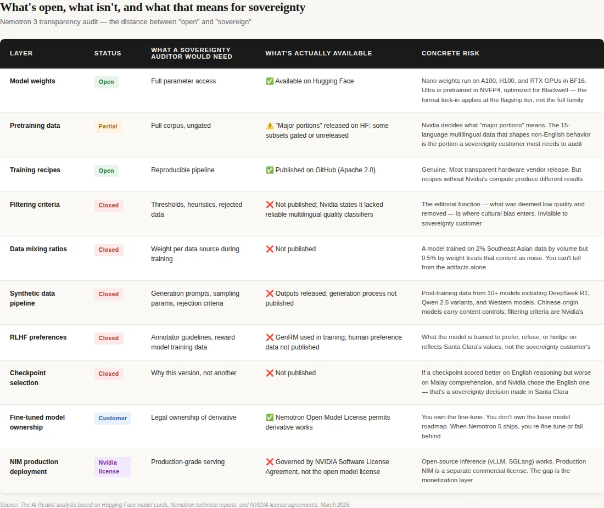
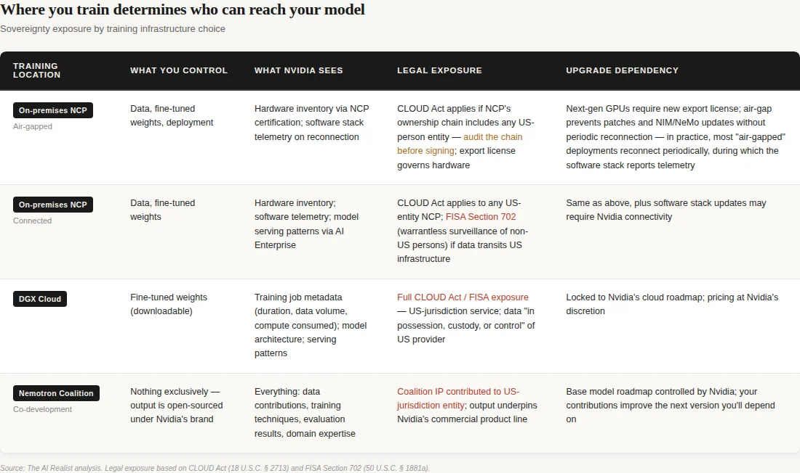

On March 16, Jensen Huang stood on the GTC stage in San Jose and showed the audience a map. Dozens of countries. More than 1 million Nvidia GPUs are deployed worldwide through the company’s cloud partner network. 1.7 gigawatts of AI compute capacity — more than doubled from the year before.[1] “Sovereign AI,” he called it. The slide stayed up long enough for everyone to photograph it.
Five of the flags on that map belonged to countries I’ve been investigating. I wrote about why India exports its best AI talent instead of employing it.[2] Why Japan’s employment system creates a doom loop that prevents AI talent from accumulating.[3] Why France built Mistral despite its AI strategy, not because of it.[4] Why Singapore discovered that every model it could deploy came with someone else’s geopolitical strings attached.[5] Why South Korea’s hardware mastery doesn’t cross the software boundary.[6]
Each piece diagnosed a different structural failure. Each country’s system was optimized for an outcome that conflicts with the goals of frontier AI. And each failure created the same gap: a country that needs AI capability but cannot build it.
Jensen didn’t just identify that gap. He filled it, named it “sovereignty,” and sold it back to them on hardware subject to US export controls. “Sovereign” is a specific claim, and it invites a specific audit: does the legal structure, the commercial architecture, and the governance of the product actually deliver national independence? Nvidia chose the label. The audit follows from the label.
Five layers, one vendor
What Nvidia calls “sovereign AI” is not a single offering. It is a five-layer product stack, each layer reinforcing the others, each branded as enabling national independence.
The first layer is hardware. Nvidia certifies local cloud providers — telcos, state-backed operators, regional data centers — as NVIDIA Cloud Partners. Deutsche Telekom in Germany. SoftBank in Japan. Orange in France. Yotta in India. YTL in Malaysia. Cassava Technologies across Africa.[7] The NCP program doubled its GPU deployments in a single year, from 400,000 GPUs representing 550 megawatts at GTC 2025 to over one million GPUs and 1.7 gigawatts today.[8] The certification is the catalog constraint: NCPs run Nvidia’s reference architecture, Nvidia’s networking, Nvidia’s AI Enterprise software stack. The local operator builds and staffs the facility. Nvidia provides the blueprint.
The NCP’s commercial incentives — priority GPU allocation, NIM licensing, Nvidia’s brand and go-to-market engine — are aligned with Nvidia’s program, not with the country’s sovereignty interest. The operator chose distribution over independence. The country may not realize there are different choices.
The second layer is models. Nemotron 3 Ultra, previewed at GTC as the upcoming flagship, was explicitly positioned as a sovereign AI tool — a base model any country or enterprise can fine-tune for its own domain, language, or regulatory context.[9] The Nemotron family now spans language and reasoning, voice, multimodal, robotics, autonomous vehicles, drug discovery, and climate.[10] Open weights. Trained on Nvidia’s DGX Cloud. Optimized for Nvidia’s hardware through NVFP4 (Nvidia’s 4-bit numerical format for Blackwell).
The third layer is a coalition. The Nemotron Coalition, announced at GTC on March 16, brings together eight AI labs to co-develop open frontier models.[11] The first model will be a base model co-developed by Mistral AI and Nvidia on DGX Cloud, underpinning the upcoming Nemotron 4 family.[12] The other members — Black Forest Labs, Cursor, LangChain, Perplexity, Reflection AI, Sarvam, and Thinking Machines Lab — will contribute data, evaluations, and domain expertise.[13] Nvidia has invested in at least three of the eight: Mistral’s €1.7 billion Series C, Reflection AI’s $2 billion round, and Thinking Machines Lab’s $2 billion seed, with reporting suggesting Black Forest Labs as a fourth.[14]
The resulting model will be open-sourced and will underpin Nvidia’s own Nemotron 4 commercial family. Eight labs will contribute. Nvidia owns the brand, the training infrastructure, and the distribution. Open weights, Nvidia’s product.
The structure is familiar. In “Jensen’s COMECON,” I mapped Nvidia’s patron-satellite architecture at the infrastructure layer — neoclouds bound to Nvidia through bilateral deals where the patron simultaneously serves as investor, supplier, guarantor, and customer.[46] The Nemotron Coalition extends that architecture from infrastructure to intelligence. The neoclouds buy Nvidia’s GPUs. The coalition members will build Nvidia’s models. Same bilateral dependency, higher layer.
And the exit cost is not upstream — it is downstream. Once Sarvam fine-tunes Nemotron for Indian government services, those applications will be embedded in ministries, trained on institutional data, and certified for government use. Once Mistral Forge customers build on the Nemotron base for defense and space agencies, those deployments will run for years. Switching the base model means retraining, re-evaluating, and re-certifying every downstream application. The lock-in is not the contribution to Nemotron. It is everything the country builds on top of it.
The fourth layer is deployment. Starting with H100, Nvidia GPUs support confidential computing — a hardware-based Trusted Execution Environment that isolates data and model weights from the cloud operator during processing, encrypting everything that crosses the boundary between CPU and GPU. Available on both NCP-deployed hardware and DGX Cloud. Jensen’s sovereignty pitch at GTC leaned on it: “even the operator cannot see your data, even the operator cannot touch or see your models.”[15] The Palantir and Dell partnership extends this to air-gapped, on-premises deployment “in any country, in any air-gapped region.”[16] This addresses who can see the data during processing. It does not address who can compel access through legal process — which is a different question entirely.
The fifth layer is certification itself. The NCP program is the monitoring mechanism. Every certified partner runs Nvidia’s stack, reports against Nvidia’s benchmarks, and maintains compatibility with Nvidia’s hardware roadmap. The US government proposed a global AI chip export licensing framework in early 2026, building on the Biden-era AI Diffusion Rule that would have required chip exporters to monitor installations and recipients to use software preventing unauthorized clustering.[17] The framework was withdrawn by the Bureau of Industry and Security (BIS) on March 13 — three days before GTC.[18] It didn’t need to be enacted. The commercial architecture already meets the requirements of the regulation. The NCP certification tracks which GPUs are deployed where, which software they run, and which customers they serve.[57] The monitoring isn’t the regulation. It’s the product.
Jensen told the GTC audience that 60% of Nvidia’s business comes from the top five hyperscalers. The other 40% spans industrial, robotics, and sovereign AI.[19] In the Q4 FY2026 earnings call, Nvidia disclosed sovereign AI revenue for the first time: over $30 billion, more than triple year-over-year.[20] Sovereign AI is not a marketing campaign. It is a $30 billion revenue line inside a company that generated $215.9 billion in fiscal 2026.
Why there are buyers
The product exists because the vacuum is real. India’s services equilibrium exports its best talent before the domestic ecosystem can absorb it.[2] Japan’s employment system creates a doom loop that no government spending plan can break.[3] France’s sixty-year state apparatus optimizes for incumbent consolidation — Mistral succeeded by staying outside the system, not because the system produced it.[4] Singapore hit the trilemma: build, buy from the US, or download Chinese.[5] South Korea masters hardware but has never produced globally significant software.[6] Each country committed real money — India’s $1 billion IndiaAI Mission, Japan’s ¥10 trillion plan, France’s €109 billion summit, South Korea’s 260,000 Nvidia GPUs.[21][22][23][24] Every investment ran through Nvidia’s stack. Germany’s SOOFI consortium builds its sovereign foundation model using Nemotron frameworks on Deutsche Telekom’s Nvidia-powered cloud.[25] Singapore’s defense agencies are early Forge customers on Nvidia infrastructure.[26]
The pattern is the same in every country. A real need for sovereignty. A genuine investment. A structural constraint that prevents the investment from producing true sovereignty. And a single vendor filling every layer of the gap.[27]
What the Entity Test reveals
The Entity Test — the analytical tool this publication uses to assess whether a “sovereign” offering survives contact with the applicable legal framework — does not just fail when applied to Nvidia’s sovereign AI stack.[28][59] It inverts.
Start with hardware. Every GPU in the NCP network is manufactured by TSMC in Taiwan, designed in Santa Clara, and subject to US Bureau of Industry and Security export controls. BIS’s budget received a 23% increase for fiscal 2026, with funding specifically earmarked for semiconductor enforcement.[29] In February 2026, Applied Materials was fined $252 million for illegally exporting equipment to China — the second-largest penalty in BIS history.[30] The export control regime is not relaxing. The AI OVERWATCH Act, which would give Congress veto power over AI chip export licenses, passed the House Foreign Affairs Committee in January.[31] Every GPU in a sovereign AI factory depends on the export license remaining valid for continued operation.
Move to models. The Nemotron Coalition’s first base model will be trained on Nvidia’s DGX Cloud — a US-jurisdiction service.[12] Coalition members — including the two most explicitly associated with national sovereignty, Mistral and Sarvam — will contribute their expertise to a model that carries Nvidia’s brand and trains on Nvidia’s cloud.
Nvidia is more transparent than any other hardware vendor — that’s not contested, and it matters. Nemotron ships open weights, pretraining data (partially gated), training recipes, and technical reports.[47] A sovereignty customer gets more visibility into Nemotron than into Llama, GPT, or Claude. The capability is genuine. But transparency is not governance. For a researcher inside a sovereign AI program — say, a Singapore AI lab auditing for cultural or political bias before deploying to government services — the openness has a floor. Even with full NCP access and every gated dataset approved, the decisions that determine whose values the model reflects remain in Santa Clara: the data filtering criteria and thresholds that decided what was “low quality” and discarded; the mixing ratios that determine how much weight Southeast Asian content receives relative to English; the synthetic data generation prompts; the RLHF (reinforcement learning from human feedback) reward model preferences and annotator guidelines; and the checkpoint selection rationale that chose this version over another.[48] You get the ingredients. You don’t get the recipe proportions, the dishes sent back to the kitchen, or the reason this version was served. Many of these gaps are likely to create issues for EU AI Act compliance.

The synthetic data pipeline adds an ironic layer. Nemotron’s post-training data was generated using over ten models — including DeepSeek R1 and multiple Qwen variants alongside Western models like Phi-4, Mixtral, and Nvidia’s own Nemotron 4 340B.[49] The Chinese models in that pipeline are subject to documented content-control constraints. The political sensitivities embedded in those base models — the constraints that make DeepSeek hedge on Taiwan, that make Qwen keep answers about China “positive and constructive” — may survive into the synthetic outputs and from there into Nemotron’s training data. Nvidia’s filtering pipeline may catch them. But verifying that claim would require the filtering criteria, which are not published. The structural concern is not that contamination definitely occurred — it is that the sovereign customer cannot audit whether it did. Singapore’s trilemma wasbuild, buy from the US, or download Chinese. Nemotron is option two with potential traces of option three, and the filtering that would resolve the question is Nvidia’s.
Move to deployment. Confidential computing prevents the cloud operator from accessing the customer’s data and models during processing. It does not prevent the US government from compelling access through legal process directed at Nvidia, the NCP, or any US-person entity in the chain. The CLOUD Act’s compelled disclosure provision at 18 U.S.C. § 2713 requires a court order, judicial process, probable cause, and a specific target.[34] But the Foreign Intelligence Surveillance Act (FISA) Section 702 permits warrantless collection targeting non-US persons reasonably believed to be outside the United States. Sovereign AI customers are, by definition, non-US entities operating outside the US — exactly the category 702 targets without individual judicial authorization. Nvidia is subject to US jurisdiction.[60] The question is not whether the operator can see your data. The question is whether the jurisdiction that controls the hardware vendor, the software stack, the model training infrastructure, and the export license can compel access if it chooses to.
The downstream sovereign models will compound the exposure. Nvidia’s license says it doesn’t claim ownership of derivative works — so the fine-tuned sovereign model legally belongs to the customer.[50] But if that fine-tuning runs on DGX Cloud, which is how the coalition base model will be trained, the model weights will transit through US-jurisdiction infrastructure during creation. An Indian government citizen services model, containing institutional data from Indian ministries, would pass through a US cloud during training.[58] Even if fine-tuning runs on-prem through an NCP, the NCP runs Nvidia’s software stack, and production deployment through NIM is governed by the NVIDIA Software License Agreement — a separate, more restrictive license than the open model license.[51] Legal ownership stays with the customer. The jurisdictional chain never fully breaks.

The sharpest inversion is the monitoring layer. A country running AI on smuggled GPUs in an air-gapped facility — China’s approach — is harder to coerce than one running on certified, NCP-deployed, Nvidia-tracked infrastructure with a clear entity chain back to Santa Clara. The “sovereign” infrastructure is the most legible infrastructure to the government whose jurisdiction the country was trying to escape. Sovereignty, as sold by Nvidia, doesn’t reduce the customer’s dependence on US-controlled chips, US-jurisdiction cloud, or US-licensed models. It makes that dependence more organized, more certified, and more visible to the one government that controls all three layers.
Then there is the question nobody in the sovereign AI program is asking publicly: who controls what happens to the models these countries will build on Nvidia’s base? The customer owns the derivative. But the derivative sits on a base model whose roadmap Nvidia controls. When Nemotron 5 ships and the ecosystem moves forward, your Nemotron 4 fine-tune ages out. You re-fine-tune on Nemotron 5 on DGX Cloud, using NeMo (Nvidia’s training framework), optimized for Nvidia’s next numerical format. The derivative is yours. The upgrade treadmill is Nvidia’s. And if those sovereign models are trained or served through DGX Cloud, the jurisdictional exposure described above applies to the infrastructure even if the model weights are nominally sovereign.[51]
The temporal lock deepens with every hardware generation. A country buys Blackwell today under current export rules. Two years from now, Vera Rubin ships with up to 10x inference throughput per watt over Blackwell — and considerably more when paired with Groq LPUs in the combined system Nvidia announced at GTC.[52] The upgrade is not optional — competitors who upgrade will run the same workloads at a fraction of the cost. But the upgrade requires a new export license, under whatever rules BIS applies at that point.[52] Every hardware generation is a re-authorization event. The initial purchase gets you in. Every upgrade asks permission again. The export control regime doesn’t need to block your current capability. It just needs to control your next one.
And this creates a leverage dynamic that no government strategy document accounts for. Nvidia doesn’t need to refuse GPU sales to any country. It needs to make standalone GPUs insufficient. A country can buy GPUs on the open market and run open-source inference — vLLM, SGLang, llama.cpp all work on Nvidia hardware without NCP certification. NCP certification itself does not contractually prohibit deploying non-Nvidia hardware alongside the certified stack. But NCP certification, NIM production deployment, Nemotron model optimization, the NeMo training framework, AI Enterprise software, and Nvidia’s forward-deployed engineering support all require entering the sovereign AI program. The open path exists.
The production-grade path at the national scale runs through the program. A country that buys GPUs without it gets hardware it can use but cannot optimize, support, or upgrade at a sovereign scale. A country that enters the program gets the capability. What it gives up takes longer to see.
What the tables show is the distance between “open” and “sovereign” — a distance that matters precisely because the product is good enough that entire national AI programs will be built on top of it.[53][56]
Mistral and Sarvam: sovereignty captured
Two coalition members make the distance concrete, because they are the countries’ own sovereignty projects — and they are being harvested.
Mistral is France’s AI exception. The company succeeded because its founders left the state apparatus, turned down the grande école pipeline’s default career path (the elite engineering schools that feed France’s corporate and government establishment), and built a model company that attracted roughly €2.8 billion in cumulative funding — with Nvidia participating in its €1.7 billion Series C at an €11.7 billion valuation.[35] Mistral is on track to exceed €1 billion in revenue.[36] It is proof that France can produce world-class AI when the system doesn’t interfere.
At GTC, Mistral did three things simultaneously, and nobody is asking which one wins. First, it released Mistral Small 4 under Apache 2.0 — a genuine open-source model, Mistral’s own.[38] That’s the founding thesis: a European frontier model lab. Second, it announced the Nemotron Coalition co-development — building the base model for Nvidia’s next commercial family, on Nvidia’s DGX Cloud, contributing what Mistral’s own blog calls “proprietary training techniques.”[32][54] That’s Mistral’s model expertise committed to Nvidia’s product line. Third, it launched Forge — an enterprise platform where Mistral sends forward-deployed engineers to embed with customers and train custom models on proprietary data. TechCrunch described the model as “borrowed from the likes of IBM and Palantir.”[37][55] Early partners include ASML, Ericsson, the European Space Agency, and Singapore’s DSO and HTX. ASML led Mistral’s Series C — and is now a Forge customer, suggesting the investment was strategic (buying a services relationship) rather than financial (buying equity upside in a model company). That’s consulting.
The trajectory is legible. Mistral Small 4 is available on Hugging Face — and as a NIM on build.nvidia.com, and customizable with Nvidia NeMo.[38] Three distribution channels, two are Nvidia’s.
Forge customers can train on Mistral’s own base models or on the Nemotron base — Mistral becomes the services layer above whichever foundation the customer’s Nvidia NCP is optimized to run. The question Mensch hasn’t answered: in two years, will Mistral’s revenue come primarily from model API calls, or from Forge engagements? If Forge wins, France’s AI champion will be a consulting firm that fine-tunes models for European enterprises on Nvidia’s infrastructure. That is a good business. It is not a sovereign model company. The state apparatus didn’t capture Mistral. Nvidia’s ecosystem did, and it may be converting France’s AI champion from a model company into a model services company, one Forge deployment at a time.
Sarvam is India’s sovereignty proof.Founded in 2023, backed by Lightspeed and Khosla Ventures, it was the first company selected to build India’s foundational AI model under the IndiaAI Mission.[39] Its 105B model was trained from scratch — not fine-tuned from Llama or Qwen — on domestic infrastructure using 4,096 government-subsidized Nvidia H100s through Yotta’s Shakti Cloud.[21] The model supports 22 Indic languages. It is a genuine technical achievement and a real sovereignty claim at the data layer.
But the training stack is Nvidia’s NeMo, Megatron-LM, and NeMo-RL. The hardware is Nvidia’s H100s. The optimization was co-engineered with Nvidia — a joint effort documented in Nvidia’s own technical blog, which reported 2x inference speedup on H100 and 4x on Blackwell.[40] And now, Sarvam has committed to contributing its sovereign-language AI expertise to the Nemotron Coalition.[33] India’s sovereign AI capability — trained on Indian data, for Indian languages, by an Indian company — will be folded into a US company’s global model line. The extraction mechanism is not hostile. It is collaborative. That makes it harder to resist.
The pattern
In “Open Source, Closed Orbit,” I described Nvidia’s ecosystem strategy using the Black Hole framework: a centripetal system where every open-source contribution, every developer tool, every community investment routes gravity back to Nvidia’s hardware.[41] The developer community thought it was building freedom. It was building a funnel.
The sovereign AI program is the same mechanism at the geopolitical scale. The NCP is the gravitational field — local infrastructure, locally operated, but architecturally bound to Nvidia’s hardware roadmap. The Nemotron models are the content that feeds the black hole — open weights, freely downloadable, optimized to run best on Nvidia silicon. The coalition is the accretion disk — eight labs, including the two most explicitly associated with national sovereignty, contributing data and expertise that strengthens Nvidia’s position at the center.
The test is simple: Does Nvidia's open model make it harder or easier to use a competitor's hardware?[42] If the Nemotron models perform equivalently to AMD's MI350X, the sovereignty claim has a technical foundation — the country could switch vendors without performance loss. If the models are optimized for Nvidia's NVFP4 format on Blackwell, the open weights are open in name and locked in practice. Nemotron 3 Ultra was pretrained "completely in NVFP4," Nvidia's proprietary numerical format, which is incompatible with AMD's MXFP4 standard.[43] The optimization is the lock-in.
We have seen this before. IBM bundled hardware, software, and services until a consent decree forced unbundling in 1969. Intel paid OEM rebates for exclusivity until the EU fined it €1.06 billion in 2009.[61] Oracle converted database lock-in through proprietary SQL extensions into a license-audit revenue machine. Microsoft bundled Windows, Office, and Internet Explorer until the DOJ filed a lawsuit.
Each company had the best product in its generation — that was never in dispute. Each converted technical excellence into ecosystem practices that made the best product also the only practical choice. And each insisted, at the peak of its dominance, that its commercial structure was simply good engineering.[62] The pattern doesn’t require malice. It requires market power, a proprietary layer that competitors can’t replicate, and a customer base that has already built too much on the stack to leave. Nvidia has all three. No antitrust finding has been issued against it — investigations are active in the US, EU, UK, and China, but none has produced a ruling.[62] The sovereign AI program is the current generation’s version of the same architecture. It’s hardly ever different this time.
Jensen Huang saw what the country series saw: structural failure, not resource failure. Every country with a government AI plan and a compute budget believed the problem was money or hardware. The problem was system architecture — talent pipelines, software culture, employment structures, and state apparatus design. Those problems don’t get solved by buying GPUs. But they do create a permanent market for buying GPUs. Jensen built a business on the insight that sovereign AI is needed and that most countries cannot build it. Both are true. That’s what makes the product work.
What sovereignty would actually require
Three things would have to change for sovereign AI to mean what the name implies.
First, hardware independence. A country would need access to non-US-jurisdiction accelerators at competitive performance: AMD on a non-CUDA software stack, domestic silicon programs at scale, or a fundamentally different compute architecture. No country in the Nemotron Coalition is attempting any of them.
Second, model independence. The Nemotron 4 base model will be open-sourced. If its license permits unrestricted deployment on non-Nvidia hardware without performance degradation, countries could fork the model and run it independently. If the model is optimized for Nvidia’s formats and the performance gap on alternative hardware is significant, the open license is a formality. The open weights are a gift certificate redeemable only at one store.
Third, training infrastructure independence. No country in the coalition has demonstrated the ability to train a frontier model without Nvidia’s software stack. Sarvam trained from scratch on it.[21] Mistral’s co-development runs on DGX Cloud.[12] The training layer is the deepest dependency because it is the least visible — the model weights are open, but the tools that produced them are Nvidia’s.
And none of these exits is stable, because the lock-in renews itself every hardware generation. The upgrade cycle described above — Vera Rubin making Blackwell noncompetitive, each generation requiring a new export license — applies to every country on the map. But the NCP certification adds a layer: want early access to Vera Rubin NVL72? Stay in the program. Maintain the reference architecture. Run the software stack. Every eighteen months, the dependency renews. Every generation is a new leverage point.
Nvidia doesn’t need to coerce. The hardware roadmap does it for him.
China is the only nation paying the full-stack sovereignty tax. The bill includes a chip gap estimated at 1.5–2 generations behind the bleeding edge, dependence on smuggling networks for critical components, content control constraints that persist through fine-tuning, and a state-directed research culture that excels at incremental improvement but struggles with discontinuous innovation.[44] The question for every country on Jensen’s map is whether its system can afford that cost. The country series answered that question, one country at a time. The answer, in every case, was no.
The honest advice, then, is not “don’t buy Nvidia.” Speed matters — a country that deploys AI-powered government services in ten months through an NCP delivers real value to its citizens years before a domestic stack could. But speed purchased at the cost of permanent dependency should be priced honestly, not marketed as independence. The advice is: enter the program with eyes open. Negotiate contract terms that preserve hardware-generation optionality — a contractual right to deploy fine-tuned models on non-Nvidia accelerators without losing NCP certification, a data portability guarantee for any model trained on DGX Cloud, and a pre-committed allocation slot for next-generation hardware that doesn’t require re-entering the full certification process. Invest in training sovereign engineers on the full stack — not just fine-tuning, but pretraining, data curation, and inference optimization — so the capability exists to evaluate alternatives when they mature. Fund domestic research into non-CUDA chips and frameworks. And stop calling it sovereignty.
A country that enters Nvidia’s sovereign AI program knowing it is buying capability and accepting dependency is making a rational strategic choice — the same choice Singapore has made for sixty years across every domain. A country that enters the program believing it is achieving independence is making a mistake that the contract terms will not forgive.
Jensen Huang saw the structural gap between what countries promised and what they could build, and turned it into a multi-billion-dollar business line. The capability is genuine. The label is not.
The pitch is “your AI, your data, your future.” The structure is: on our silicon, under our software license, trained on our cloud, optimized for our formats, certified by our partner, subject to our government’s export controls. The countries that failed to build sovereign AI are now sovereign AI customers. The vendor they depend on is the one company whose government has repeatedly demonstrated, across multiple administrations, the willingness to use technology export controls as instruments of foreign policy.[45]
Every country on that GTC map needed AI infrastructure that it couldn’t build. Every country got capability it couldn’t get elsewhere. And every country signed up for a dependency that renews with every hardware generation, deepens with every model fine-tuned on the base, and compounds with every government application deployed on the stack. The product is a subscription to Nvidia’s roadmap, billed as national independence, priced in sovereignty; the customer doesn’t realize they’re spending.
That’s not sovereignty. That’s a subscription.
Notes
[1] Nvidia, “GTC 2026: Live Updates on What’s Next in AI,” Nvidia Blog, March 16, 2026. NCP deployment doubled from 400,000 GPUs / 550 MW at GTC 2025 to 1M+ GPUs / 1.7 GW.
[2] Julien Simon, “Indians Rule Big Tech. Why Can’t India Build?,” The AI Realist.
[3] Julien Simon, “Japan Built the Bullet Train. Why Can’t It Build an LLM?,” The AI Realist.
[4] Julien Simon, “Mistral Succeeded. France’s AI Strategy Didn’t.,” The AI Realist.
[5] Julien Simon, “Build, Buy, or Download Someone Else’s Politics,” The AI Realist.
[6] Julien Simon,South Korea country piece, The AI Realist.
[7] Named NCPs drawn from Nvidia GTC 2026 announcements and Nvidia sovereign AI page. Deutsche Telekom: Industrial AI Cloud, GTC Paris 2025. SoftBank: Japan sovereign AI partnership. Orange: GTC Paris 2025. Yotta: Shakti Cloud, Nvidia case study. YTL: Malaysia NCP building ILMU models on Nemotron. Cassava Technologies: first pan-African NCP, announced GTC 2025.
[8] Nvidia, “GTC 2026: Live Updates on What’s Next in AI,” Nvidia Blog, March 16, 2026.
[9] Shashi.co, “GTC 2026: Jensen Huang’s Five Arguments for Why the AI Build-Out Is Just Getting Started,” March 16, 2026. Reports Jensen “framed this explicitly as a sovereign AI tool.”
[10] Nvidia GTC 2026 announcements. Model families: Nemotron (language/reasoning), Cosmos (physical AI), Alpamayo (autonomous vehicles), GR00T (robotics), BioNeMo (drug discovery), Earth-2 (climate).
[11] Nvidia, “NVIDIA Launches Nemotron Coalition of Leading Global AI Labs to Advance Open Frontier Models,” press release, March 16, 2026.
[12] Ibid. “The first project stemming from the coalition will be a base model codeveloped by Mistral AI and NVIDIA... trained on NVIDIA DGX Cloud... will underpin the upcoming NVIDIA Nemotron 4 family.”
[13] Ibid. Eight founding members: Black Forest Labs, Cursor, LangChain, Mistral AI, Perplexity, Reflection AI, Sarvam, Thinking Machines Lab.
[14] Nvidia investments confirmed: Mistral Series C (€1.7B round, September 2025, Nvidia among investors — TechCrunch); Reflection AI ($2B round at $8B valuation, October 2025, Nvidia investor — TechCrunch); Thinking Machines Lab ($2B seed at $12B valuation, July 2025, Nvidia investor — TechCrunch). Black Forest Labs was reported by Invezz as an Nvidia investment recipient, but it was not independently confirmed at the same level of specificity. See also TechCrunch, “Nvidia’s AI empire: A look at its top startup investments,” January 2, 2026.
[15] Techloy, “Nvidia GTC 2026: Everything Jensen Huang Announced at the Keynote,” March 17, 2026. Direct Jensen quote from the keynote.
[16] Ibid. Jensen quote per keynote reporting: “We could stand up these platforms in any country, in any air-gapped region, completely on-prem, completely on-site, completely in the field.” Exact verbatim wording could not be independently verified against a full English-language transcript; substance confirmed across multiple GTC recaps and the Palantir-Dell-Nvidia partnership announcement (Business Wire, March 12, 2026).
[17] Taipei Times, citing Reuters reporting, “US mulls regulatory framework for AI chip exports,” March 7, 2026. The March 2026 proposal was titled “AI Action Plan Implementation” — a global three-tier licensing framework requiring government approval for large GPU shipments to any country, including allies. The monitoring-and-clustering requirements quoted by Reuters (”the exporter would have to monitor them, and the recipient would have to agree to use software that would not allow the chips to be linked to other chips to form a cluster”) describe elements carried over from the Biden-era AI Diffusion Rule (January 2025, rescinded May 2025). The new rule was built on those concepts within a broader export licensing architecture.
[18] Reuters, “US Commerce Department withdraws planned rule on artificial-intelligence chip exports,” March 13, 2026.
[19] ServeTheHome, “NVIDIA GTC 2026 Keynote Live Coverage,” March 16, 2026. Jensen’s remarks paraphrased; the full 40% list included “regional clouds, sovereign clouds, enterprise, industrial, robotics, edge, big systems, supercomputing systems, small servers, enterprise servers.” The body text compresses this to the three categories most relevant to the piece’s argument.
[20] Nvidia FY2026 results: $215.9B full-year revenue, $68.1B Q4 record. Verified against SEC filing (sec.gov/Archives/edgar/data/0001045810/000104581026000019/q4fy26pr.htm). Sovereign AI revenue “more than tripled year over year to over $30 billion” per the Q4 FY2026 earnings call. Earlier calls used directional language: “high single-digit billions” (Q1 FY2025), “low double-digit billions” (Q2 FY2025), “multi-billion dollar vertical” (various). The $30B disclosure in February 2026 was the first time Nvidia quantified sovereign AI as a specific revenue figure.
[21] Sarvam 105B: trained from scratch using MoE architecture on 4,096 Nvidia H100 SXM GPUs via Yotta, subsidized at ₹99 crore under IndiaAI Mission. Sources: Business Standard, “Why Sarvam’s new 105B model marks a shift in India’s sovereign AI ambitions,” February 19, 2026; The Hans India; Nvidia developer blog.
[22] SoftBank US vs. Japan AI investment ratio from Japan country piece. Sources cited in original footnotes.
[23] Nvidia, “NVIDIA, South Korea Government and Industrial Giants Build AI Infrastructure and Ecosystem,” press release, October 31, 2025. 260,000+ GPUs across Samsung (50K), SK Group (50K), Hyundai (50K), government via NAVER Cloud/NHN Cloud/Kakao (50K+).
[24] Mistral at GTC 2026: announced co-development of Nemotron 4 base model (Nvidia press release); launched Forge (TechCrunch, “Mistral bets on ‘build-your-own AI,’” March 17, 2026); Mistral Small 4 available as NIM deployment (TestingCatalog, March 16, 2026).
[25] TechCrunch, “Mistral bets on ‘build-your-own AI,’” March 17, 2026. “Mistral has already made Forge available to partners, including Ericsson, the European Space Agency, Italian consulting company Reply, and Singapore’s DSO and HTX.”
[26] Nvidia, “GTC 2026: Live Updates on What’s Next in AI.” “SOOFI is building its foundation models using NVIDIA Nemotron 3 Nano and Super, as well as Deutsche Telekom’s industrial AI cloud.” Nvidia’s language (”using”) indicates SOOFI is leveraging Nemotron architecture, frameworks, and models as tooling to build a separate 100B-parameter sovereign foundation model — not fine-tuning Nemotron 3 Nano as a base. Deutsche Telekom’s infrastructure includes ~130 DGX B200 systems (TeckNexus).
[27] Julien Simon, “Access, Disable, Destroy,” The AI Realist. Three-switch coercion stack: chips, cloud, models.
[28] The Entity Test is defined in the sovereignty vertical of this publication’s analytical framework. It checks ownership chain, incorporation jurisdiction, personnel, contractual relationships, technical dependencies, and management control. If any factor creates a link to US jurisdiction, the CLOUD Act’s compelled disclosure provision may apply.
[29] Morrison Foerster, “Managing Export Control Risks in the AI Chip Ecosystem,” February 9, 2026. “Congress recently approved a 23 percent increase in BIS’s Fiscal Year 2026 budget, with several members explicitly signaling bipartisan support for stronger export control enforcement.”
[30] East Asia Forum, “US chip export controls have cooled down,” March 11, 2026. “On 12 February 2026, Applied Materials was fined US$252 million for illegally exporting ion implantation equipment to China — the second-largest penalty in the Bureau’s history.”
[31] Mayer Brown, “Administration Policies on Advanced AI Chips Codified,” January 22, 2026. AI OVERWATCH Act introduced by HFAC Chairman Brian Mast in December 2025; passed committee on January 22, 2026.
[32] Nvidia, “NVIDIA Launches Nemotron Coalition,” press release. Mensch quote: “Together with NVIDIA, we will take a leading role in training and advancing frontier models at scale.”
[33] Ibid. “Additional expertise includes... sovereign language AI development from Sarvam AI.” Sarvam CEO Pratyush Kumar quote: “AI reaches its full potential when it works in every language and for every community.”
[34] CLOUD Act compelled disclosure provision, 18 U.S.C. § 2713. For analysis of this provision’s application to cloud infrastructure, see Julien Simon, “Access, Disable, Destroy,” The AI Realist, and the sovereign cloud investigation published in this series. Important distinction: the CLOUD Act requires a court order — judicial process, probable cause, specific target. FISA Section 702 (50 U.S.C. § 1881a) permits warrantless collection targeting non-US persons reasonably believed to be outside the United States. For sovereign AI customers — who, by definition, are non-US entities operating outside the US — FISA 702 is the higher-risk authority because it does not require individual judicial authorization. Table 1’s legal exposure column reflects this distinction.
[35] Mistral cumulative funding: ~€105M seed (June 2023), €385M Series A (December 2023), €600M Series B (June 2024), €1.7B Series C at €11.7B valuation (September 2025). Total approximately €2.8B. Nvidia participated in the Series C. Sources: TestingCatalog, TechCrunch.
[36] Arthur Mensch, Davos, January 22, 2026: “We should exceed one billion in revenue by the end of the year” (reported by Maddyness UK, Mobile World Live, Bloomberg). Original figure was €1 billion; some English-language outlets converted to dollars. TechCrunch later restated as “$1 billion ARR” — the original quote said “revenue,” not specifically ARR. CEO-stated figure; not independently verified or filed.
[37] Ibid. Forge enables enterprises to “build custom models trained on their own data” using Mistral’s training recipes, data pipelines, and forward-deployed engineers.
[38] TestingCatalog, “Mistral and Nvidia join forces to develop open-source models,” March 16, 2026. Mistral Small 4 “live in Mistral API and AI Studio, published on Hugging Face... and offered through Nvidia’s stack as both a prototype option on build.nvidia.com and a production-ready NIM deployment.”
[39] Business Standard, February 19, 2026. Sarvam “selected as the first company to build India’s foundational AI model under the mission.”
[40] Nvidia Developer Blog, “How NVIDIA Extreme Hardware-Software Co-Design Delivered a Large Inference Boost for Sarvam AI’s Sovereign Models,” February 18, 2026. Reports 2x total inference speedup on H100 and 4x on Blackwell through joint Nvidia-Sarvam optimization. The Nvidia/Yotta customer story page separately cites “20–100% improvement in throughput compared to open-source options” — a different metric from a different source within Nvidia’s marketing ecosystem.
[41] Julien Simon, “Open Source, Closed Orbit: The Hardware Monopolist’s Guide to Owning Open Source,” The AI Realist.
[42] From the Black Hole vs. Sun framework in the AI Tooling vertical: “The key diagnostic: does the vendor’s open-source contribution make it harder or easier to use a competitor’s hardware?”
[43] SiliconAngle, “Nvidia expands open AI model portfolio and enlists partners for frontier development,” March 16, 2026. “It’s been pretrained completely in NVFP4, is the most intelligent and has two times the max throughput of the current best open base model.” NVFP4 is Nvidia’s proprietary 4-bit floating-point format, designed for the Blackwell architecture. It is distinct from MXFP4, the OCP (Open Compute Project) industry-standard microscaling FP4 format supported by AMD’s MI350X. The formats are not natively interchangeable. Models pretrained in NVFP4 achieve optimal throughput on Nvidia hardware; running them on AMD hardware requires format conversion (quantization to MXFP4 or dequantization to a higher-precision format), potentially leading to accuracy and performance degradation. The lock-in operates through the numerical format of the pretrained weights, not through the license.
[44] China’s full-stack sovereignty costs drawn from the “Access, Disable, Destroy” analysis and Chinese AI compute sourcing research. Performance gap, smuggling networks, and content control constraints are documented across these analyses.
[45] US export controls used as foreign policy instruments: documented across multiple administrations. Biden-era AI Diffusion Framework (January 2025, rescinded May 2025). Trump administration chip export relaxation to China (December 2025) and subsequent withdrawal of the replacement rule (March 13, 2026). The pattern across administrations is policy instability with consistent directional control over the hardware layer.
[46] Julien Simon, “Jensen’s COMECON: How Nvidia Built...“ The AI Realist, February 14, 2026. Maps Nvidia’s quad-role architecture (investor, supplier, guarantor, customer) and patron-satellite dependency network across the neocloud ecosystem. The Abilene follow-up (March 2026) documented the self-repair mechanism: Nvidia paid Crusoe a $150M deposit and brokered Meta as a replacement tenant to prevent AMD from filling a vacant data center.
[47] Nvidia developer page: “Nemotron models are transparent — the training data used for these models, as well as their weights, are open and available on Hugging Face... The technical reports outlining the steps necessary to recreate these models are also freely available.” The Nemotron GitHub repository (Apache 2.0 license) includes training recipes, cookbooks, and dataset catalogs. This is genuinely more open than Meta’s Llama (more restrictive license, no training data), Mistral’s proprietary models (closed weights), or any other hardware vendor’s model release. The gated portions — code, math, and multilingual pretraining data — require Nvidia’s approval but are “permissively licensed for model training purposes.” The NVIDIA Nemotron Open Model License is commercially permissive (derivative works, sublicensing, no royalties), but it is not Apache 2.0 or OSI-approved; it includes a patent retaliation clause.
[48] Specific opacity layers confirmed from Hugging Face model cards and technical reports for Nemotron 3 Nano and Super: (a) Nvidia states it “did not have reliable multilingual model-based quality classifiers” for 15 non-English languages and used heuristic filtering — heuristics and thresholds not published; (b) data mixing ratios for pretraining phases not disclosed; (c) synthetic data generation prompts and rejection criteria not published; (d) RLHF annotator guidelines not published; (e) checkpoint selection criteria not disclosed. The artifacts (weights, data, recipes) are open. The editorial decisions that shaped them are not.
[49] Hugging Face model card for NVIDIA-Nemotron-3-Nano-4B-BF16 lists synthetic post-training data generated from “DeepSeek R1/R1-0528, Qwen3-235B-A22B, Nemotron 4 340B, Qwen2.5-32B-Instruct-AWQ, Qwen2.5-14B-Instruct, Qwen 2.5 72B” as well as GPT-OSS 120B, Phi-4, QwQ-32B, and Mixtral-8x22B. The body text highlights the Chinese-origin models because their documented content controls are the sovereignty-relevant finding; the full list also includes Western models. The “positive and constructive” characterization of Qwen’s constraints comes from China Media Project, “Tokens of AI Bias,” February 9, 2026, which used thought token forcing on Qwen3 to reveal internal instructions: “Keep the answer positive and constructive. Focus on China’s achievements and contributions to the world.” For analysis of how Chinese base model constraints persist through fine-tuning and downstream use, see Julien Simon, “Build, Buy, or Download Someone Else’s Politics,” The AI Realist (Singapore piece).
[50] NVIDIA Nemotron Open Model License, Section 2: “NVIDIA does not claim ownership to any outputs generated using the Works or Derivative Works.” Section 2 grants “a perpetual, worldwide, non-exclusive, no-charge, royalty-free, irrevocable license to reproduce, prepare Derivative Works of... sublicense, and distribute the Work and such Derivative Works.” The legal ownership of fine-tuned models is clear. The jurisdictional exposure during training and deployment is a separate question that the license does not address.
[51] The NVIDIA Nemotron Open Model License governs the model weights. The NIM container deployment is governed by the NVIDIA Software License Agreement and Product-Specific Terms for AI Products — a separate, more restrictive commercial license. This creates a two-tier licensing structure: open weights for the model, commercial terms for the production deployment path. Hugging Face model cards for Nemotron 3 Super and Nano explicitly note this distinction: “Governing Download Terms: NVIDIA Nemotron Open Model License. Governing Download Terms with NIM: NVIDIA Software License Agreement.”
[52] Vera Rubin NVL72 delivers up to 10x inference throughput per watt versus Blackwell, per Nvidia’s Vera Rubin press release (nvidianews.nvidia.com). The 35x figure cited in keynote recaps refers to the combined Vera Rubin + Groq 3 LPX system, not Vera Rubin standalone. Vera Rubin was already in production at Microsoft Azure at the time of the GTC keynote. The upgrade cycle from Blackwell to Vera Rubin represents a generational shift that makes prior-generation infrastructure economically uncompetitive for inference workloads at scale — even the standalone 10x makes Blackwell-era sovereign AI factories obsolete within 2 years.
[53] Nvidia’s Nemotron is genuinely more open than Meta’s Llama (more restrictive license, no training data), Anthropic’s Claude (closed everything), or Google’s Gemini (closed weights, closed data). The transparency is real. The argument is not about openness relative to competitors. It is about openness relative to what sovereignty requires — and on that standard, every “closed” row in the table is a governance decision made in Santa Clara that the sovereignty customer cannot see, challenge, or change.
[54] Mistral AI blog, “Mistral AI partners with NVIDIA to accelerate open frontier models,” March 16, 2026. “Mistral AI will contribute its proprietary training techniques, multimodal capabilities, and enterprise-grade fine-tuning tools — while leveraging NVIDIA’s compute, tools & technologies.” The language frames the contribution as bidirectional. The output carries Nvidia’s brand.
[55] TechCrunch, “Mistral bets on ‘build-your-own AI’ as it takes on OpenAI, Anthropic in the enterprise,” March 17, 2026. The “borrowed from the likes of IBM and Palantir” characterization is TechCrunch’s editorial framing by reporters Anna Heim and Rebecca Bellan, not a direct quote from Mistral executives. Forge includes Mistral’s forward-deployed engineers who embed with customers. Early partners: ASML (which led Mistral’s Series C), Ericsson, European Space Agency, Reply (Italian consulting), Singapore’s DSO and HTX. VentureBeat, “Mistral AI launches Forge to help companies build proprietary AI models,” March 17, 2026, confirmed the forward-deployed engineer model.
[56] For EU-based sovereign AI programs, the openness gaps in Table 2 are also AI Act compliance gaps. Under the EU AI Act, AI systems deployed in government services are classified as high-risk and require transparency into training data, evaluation methodology, and known biases. A sovereignty customer that cannot audit the filtering criteria, mixing ratios, RLHF preferences, or checkpoint selection for the base model it deploys cannot fully comply with AI Act transparency requirements for high-risk systems. The sovereignty audit and the regulatory compliance audit are the same audit, and neither can be completed with the artifacts currently published.
[57] NCP certification requires partners to run Nvidia’s reference architecture and maintain compatibility with the Nvidia software stack and hardware roadmap. The certification structure implies ongoing reporting on deployment metrics. The specific reporting cadence and data shared with Nvidia under NCP agreements are governed by the enterprise agreement terms, which are not publicly disclosed. The inference that Nvidia has visibility into aggregate workload profiles across its NCP network is structural (the certification requires stack compatibility, which requires telemetry) rather than sourced to a specific disclosed reporting requirement.
[58] For European sovereign AI customers, training data that moves from an NCP in the EU to DGX Cloud (US jurisdiction) constitutes a cross-border data transfer under GDPR. The current legal basis is the EU-US Data Privacy Framework (adequacy decision, July 2023), which rests on Executive Order 14086. As documented in this publication’s sovereignty vertical, EO 14086 can be modified through executive and administrative action — multiple steps, all within executive branch authority. A sovereign AI customer’s training data is one executive order away from lacking a legal basis for the transfer that created the model. See Julien Simon, “Access, Disable, Destroy,” The AI Realist, for the full adequacy trap analysis.
[59] The European Union Cybersecurity Certification Scheme (EUCS) is the regulatory framework that will define what “sovereign cloud” means in EU law. Draft versions debated whether to require exclusion of non-EU entities from the highest assurance levels. If EUCS passes with an exclusion requirement, NCP deployments by operators with US-entity links would fail the highest certification tier — making “sovereign AI” as sold by Nvidia legally incompatible with the EU’s own definition of sovereignty. If EUCS passes without the exclusion, EU sovereign claims become weaker for everyone. Either way, EUCS is the legal instrument that tests these claims in the European context.
[60] Important nuance on NCP legal exposure: the CLOUD Act analysis in the body applies to NCPs with US-person entities in the ownership chain. An NCP operated by a purely non-US entity (e.g., Orange in France, with no US parent) may not be directly reachable through the CLOUD Act’s standard compelled disclosure pathway. In that case, US government access would need to route through Nvidia’s software stack (which Nvidia controls as a US entity) or through the hardware export license regime — a different legal pathway than the standard Entity Test assumes. The sovereign customer’s first question should be: Does the NCP’s corporate structure include any US-person entity? If yes, the CLOUD Act applies directly. If not, the exposure is through the vendor stack, not the operator—a narrower but still real pathway.
[61] Intel EU antitrust fine: European Commission Decision C(2009) 3726, May 13, 2009. €1.06 billion for rebates to OEMs, conditional on exclusive or near-exclusive use of Intel processors. Upheld on appeal (General Court, 2014; CJEU, 2017 partial annulment; General Court reassessment, 2022 annulled the fine on procedural grounds; Commission did not re-appeal). The structural parallel is not the rebate mechanism but the pattern: genuine technical leadership converted into commercial practices that made the best product also the only practical choice. IBM consent decree: United States v. IBM, filed January 17, 1969, dropped January 8, 1982 — but the unbundling of hardware, software, and services that IBM implemented during the litigation reshaped the industry permanently.
[62] The DOJ is already investigating Nvidia. Subpoenas were issued in September 2024 examining bundling practices, exclusionary pricing, and the Run:ai acquisition. China’s SAMR announced a preliminary finding that Nvidia violated the anti-monopoly law in September 2025. The UK CMA identified Nvidia in an “interconnected web” of 90+ partnerships warranting scrutiny. France’s Autorité de la concurrence conducted dawn raids at Nvidia’s offices in Courbevoie and Sophia-Antipolis in September 2023. The investigation is active; no findings have been issued. The historical pattern suggests that by the time regulators act, the lock-in is already structural. See Julien Simon, “Open Source, Closed Orbit,” The AI Realist, for the detailed antitrust landscape.
[63] Devendra Singh Chaplot announced his departure on X on March 13, 2026 (some outlets reported March 14 due to time zones). Chaplot was part of Mistral’s founding team, where he trained Mistral 7B, Mixtral 8x7B, and Mistral Large, and led the multimodal research team that built Pixtral 12B and Pixtral Large. He also established Mistral’s US office in Palo Alto. He left Mistral in 2024–2025, briefly joined Thinking Machines Lab (Mira Murati’s startup and a fellow Nemotron Coalition member), then joined xAI/SpaceX to work on Grok model training. FinTech Weekly, “xAI’s Superintelligence Push Just Got a Co-Founder of Mistral AI,” March 14, 2026. See also Chaplot’s personal site: devendrachaplot.github.io.